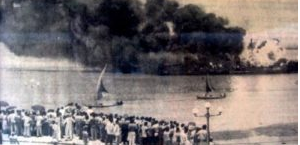
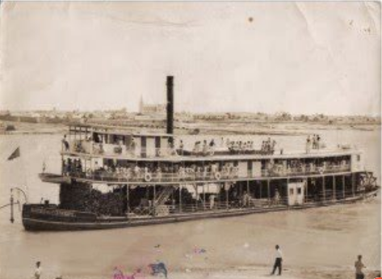
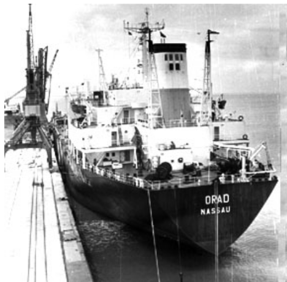
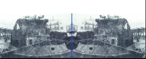
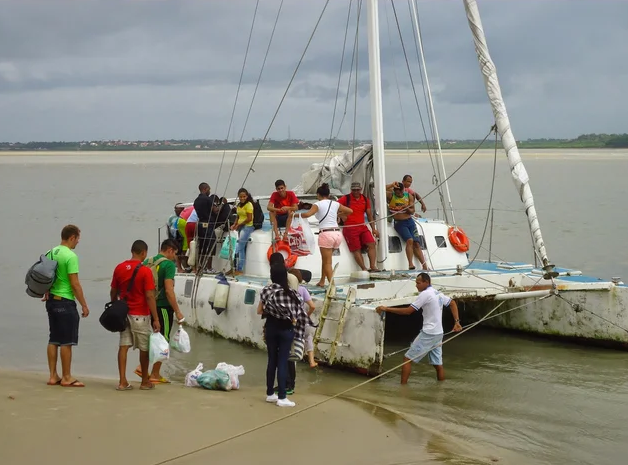
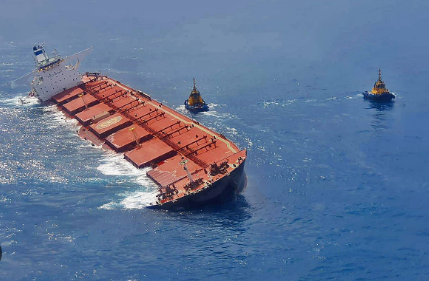

1954 • Incêndio e NaufrágioNavio Maria Celeste
Incêndio de três dias na Baía de São Marcos que culminou no naufrágio da embarcação e 16 mortes.
Acervo histórico, técnico e ambiental das principais ocorrências registradas no complexo portuário e travessias do Maranhão.

1954 • Incêndio e NaufrágioIncêndio de três dias na Baía de São Marcos que culminou no naufrágio da embarcação e 16 mortes.

1965 • NaufrágioA maior tragédia marítima do Maranhão, ocorrida durante travessia comercial vinda da Baixada Maranhense.
 1987 • Encalhe
1987 • Encalhe
Navio sul-coreano com 196 mil toneladas de carga encalhado e partido no Banco dos Cavalos.

1990 • Colisão e VazamentoColisão contra os destroços submersos do Hyundai New World com derramamento de óleo diesel.

1993 • Manobra PortuáriaAbalroamento e afundamento durante manobra noturna com o navio Mount Athos, vitimando dois tripulantes.
 1994 • Colapso Estrutural no Píer
1994 • Colapso Estrutural no Píer
Navio de 258 metros partiu-se ao meio durante o carregamento de minério no Terminal de Ponta da Madeira.
 1998 • Encalhe
1998 • Encalhe
Embarcação carregada com 24 mil toneladas de bauxita encalhada no Banco dos Lanzudos.

2015 • NaufrágioAfundamento próximo ao Espigão da Ponta d'Areia após travessia de passageiros vinda de Alcântara.

2020 • Encalhe e Afundamento ControladoGigante VLOC com 295 mil toneladas de minério de ferro encalhado intencionalmente após avarias no casco.